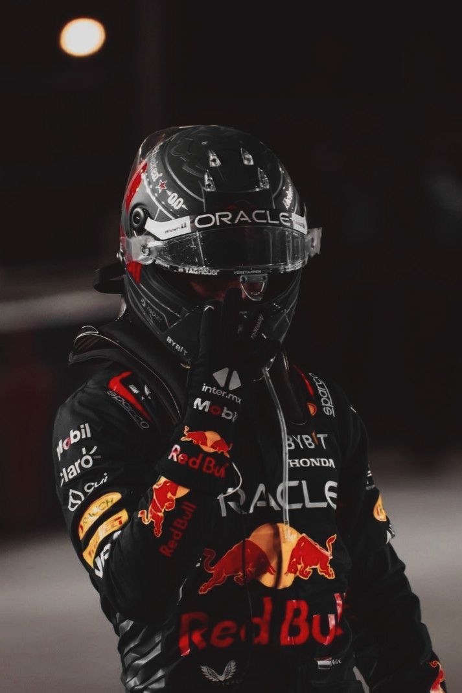
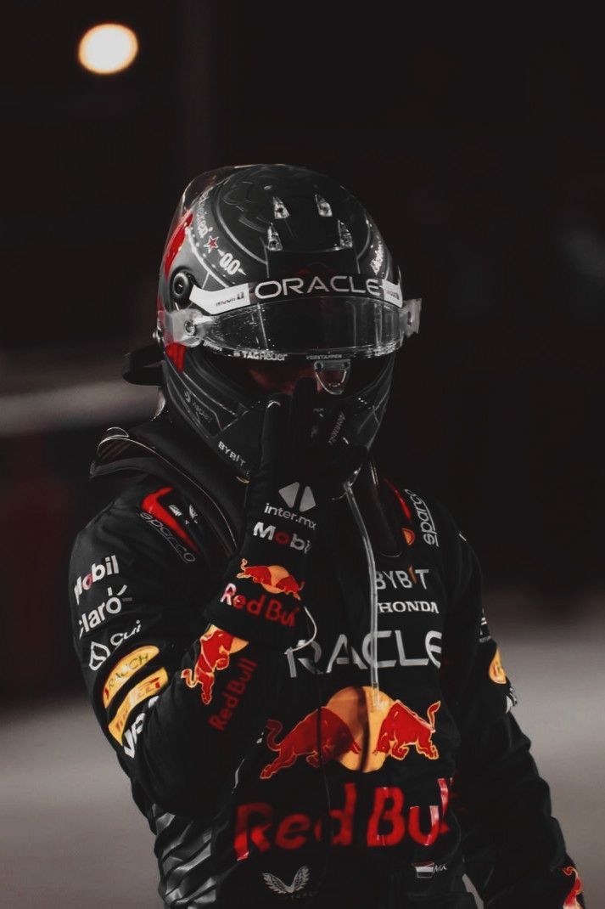

Hello! I'm Ysa Rosario, a studen from 9 - Rubidium, and my partner and I decided to honor the skills of the f1 drivers by creating a fanpage! I created this website, specifically for Max Verstappen to celebrate him– one of the most exciting Formula 1 drivers today. I hope this page brings his achievements closer to fellow fans! We would also appreciate it if you follow us in instagram! @jiw2ng and
Max Verstappen: Driven to Glory
The Life, Legacy, and Speed of Formula 1’s Champion
Career & Achievements
Max Verstappen, born on September 30, 1997, in Hasselt, Belgium, debuted in Formula 1 in 2015 at just 17 years old. He became the youngest F1 driver ever and quickly established himself as a rising star with fearless overtakes and aggressive racing style.
By joining Red Bull Racing, he secured multiple wins, culminating in the 2021 World Championship. His journey is a testament to skill, resilience, and the passion of a true racing prodigy.
Max comes from a racing family. His father, Jos Verstappen, is a former F1 driver, and his mother, Sophie Kumpen, was a successful kart racer. From a young age, Max was surrounded by motorsport, honing his skills in karting and developing the instincts that would carry him to the top of F1.
His upbringing instilled discipline, focus, and a deep understanding of racing dynamics — qualities that continue to define his career today.
Racing Style & Technique
Verstappen is known for aggressive yet controlled racing. His late braking, precise overtakes, and ability to read competitors make him one of the most exciting drivers on the grid.

 
